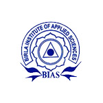
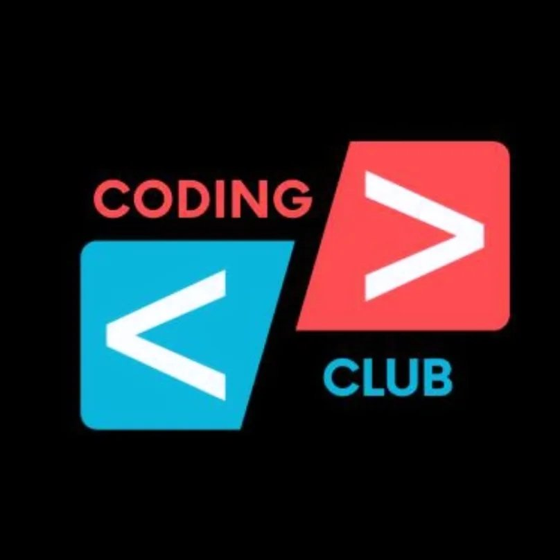

Roles Beyond the Classroom
From leading placement cells and coding clubs to representing Google, IIT Madras, and IIT Delhi on campus — a track record of community building and institutional impact.
Event Coordinator
Planned and executed technical and cultural events, managing end-to-end logistics, speaker coordination, and participant engagement across college fests.

Placement Cell Coordinator
Coordinated student-company interactions, drove placement drives, and helped maintain the bridge between recruiters and eligible students.
Placement Cell Head
Led the campus placement cell, overseeing recruiter outreach, interview preparation initiatives, and placement process management for the batch.
ILO Officer
Served as an Industry Liaison Officer, building and maintaining relationships between the institution and industry partners for internships, projects, and collaborations.
Coding Club Head
Led the college coding club — organized hackathons, coding contests, peer learning sessions, and guest lectures to foster a strong technical culture on campus.

Google Campus Ambassador
Represented Google on campus — promoted developer programs, organized workshops, and connected students with Google's tools, certifications, and developer community.
IIT Madras Campus Ambassador
Served as the campus ambassador for IIT Madras, promoting their online degree programs and BS Data Science initiatives among students at BIAS.
IIT Delhi Student Ambassador
Represented IIT Delhi programs on campus, driving awareness of academic and research opportunities and facilitating student participation in their initiatives.